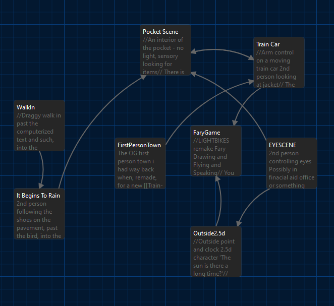
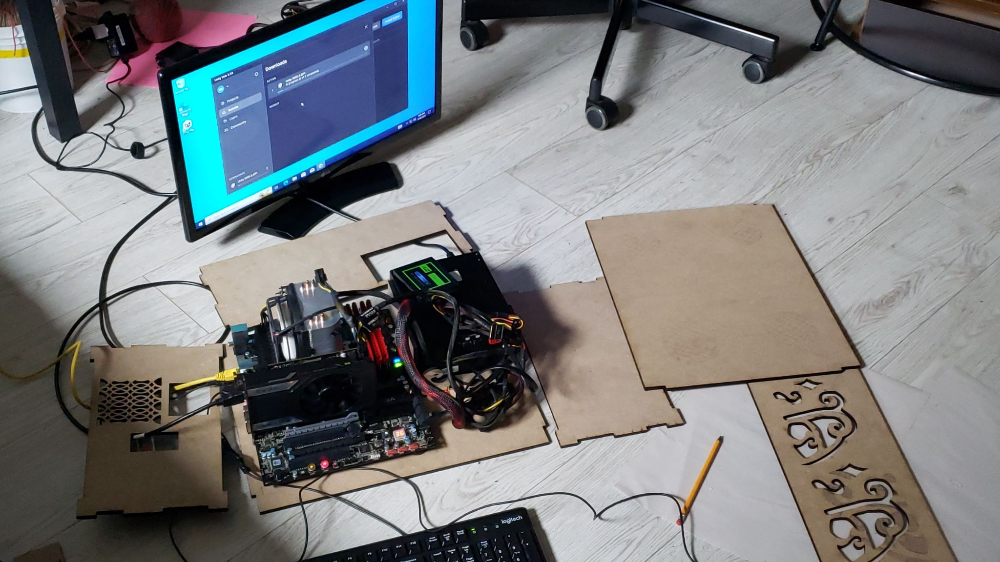
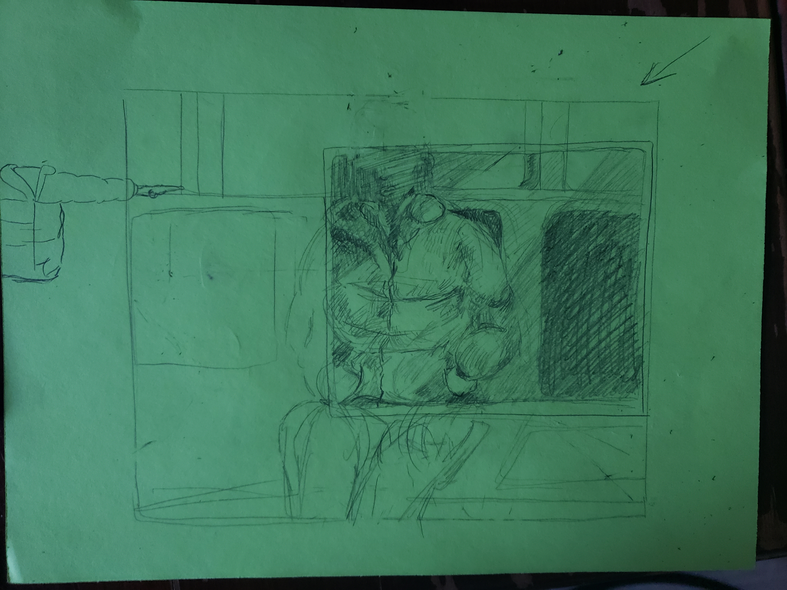

'In An Uan Electrique' is a prototype that re-used ideas from other demos, and additionally featured a new demo. The idea of the new design was
to have an unconvential inventory system that combined an ik rig and custom shaders to have players reach into their pocket during a commute.
This 'pocket-style' inventory helped create the whole program, with different levels attributed to different objects in the pocket.

a twine project laying out the game scenes before i wrote the level manager
The intention for 'In An Uan Electrique' was for it to live for a month in a gallery space as an art project.
To show the work, I sourced Craigslist for used PC Parts, and woodcut a case to hold them. In the end, the gallery displayed this 'console', and the 'console 'ran the game on top of an educational copy
of windows, while displaying its visuals on a borrowed HDMI monitor.

The flying system from the Fary-Game demo was repurposed to become a bird in 'In An Uan'. I also shaped together a 3D redesign
of the side-scrolling walk from 'Go That Way'. Lastly, I made a didactic screen where I
left some of my thoughts on game design and art practice. In the second of the following clips you will see it transition from this 'didactic' screen to the side-scrolling set up.
Even though I programmed a first-person player controller for the game,
I ended up not using it. After the success I felt like I was discovering with the 'Go That Way' demo, I was more interested i
trying to explore how we feel differently 'characterized' by blurred or changing perspective set ups then in repeating a game format. The idea for the commute with the pocket inventory
began as a sketch on paper, which led to the modelling, texturing, lighting, programming, and play testing.

A shader is used to mimick the sensory blindness of a pocket or purse. Games generally cut away this blindness, giving exceptionally clear - even iconic - images of items or objects that we are supposed to have.
But we constantly identify our belongings without truly looking at them, just by using touch, memory, and context. Regarding inventory's, Ive been wondering what happens when a game doesnt treat the 'possesive space' as a fantastically expandable and disconnected space, filled with symbolic references.
This was the intention for the inventory I designed.
In feedback from people who played the game, I was told that this system may be little too confusing and needed more work, and I believe this is true while
also appreciating what I ended up with for both its visual and experimental value.
Visual and experimental value also stands out in the last section of this portfolio. In 'Chicago Demos' we will take one more step back in time to look at three small scale prototypes
which could grow, be refined, or else be adapted into designs of greater complexity or full game systems.